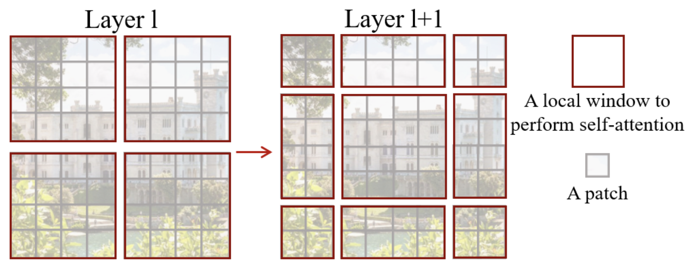

Swin Transformer#
This notebook analyzes the article Swin Transformer: Hierarchical Vision Transformer using Shifted Windows. It proposes an improvement to the transformer architecture with a hierarchical design tailored for images, reminiscent of convolutional neural networks. The first part of the notebook explains the article’s proposals one by one. The second part presents a simplified implementation of the architecture.
Article Analysis#
The main idea of the article is to apply attention hierarchically to increasingly larger parts of the image. This approach is based on several foundations:
Image analysis begins with local details before considering relationships between all pixels. This is why CNNs are so effective.
The fact that tokens (patches) do not communicate with all others improves computation time.
Hierarchical Architecture#
The hierarchical architecture of the swin transformer is summarized in this figure:

In our implementation, the ViT model converts patches into tokens and applies a transformer encoder to all elements. This is a simple architecture without data bias, applicable to various types of data.
The swin architecture adds a bias to make it more performant on images and faster in processing. As shown in the figure, the image is first divided into small patches (size \(4 \times 4\) in the article) grouped into windows. The attention layer is then applied only to each window independently. As you go deeper into the network, the dimension C (size of patches relative to the image) and the window size increase until they cover the entire image, with the same number of patches as the ViT architecture. Like a CNN, the network first processes local information, then, gradually (with the increase of the receptive field), increasingly global information. This is done by increasing the number of filters and decreasing the image resolution.
The corresponding new transformer blocks are called Window Multi-Head Self-Attention (W-MSA in the article, note that M stands for Multi-Head and not Masked).
Sliding Window#
In their analogy with CNN, the authors noted that it can be problematic to separate the image into windows at arbitrary positions. This breaks the connection between neighboring pixels located at the edges of the windows.
To correct this problem, the authors propose using a sliding window system (shifting window) in each swin block. The swin blocks are arranged in pairs as described in the figure at the beginning of the notebook.
Here is what the sliding window looks like:

As you can see, with this technique, we go from \(2 \times 2\) patches to \(3 \times 3\) patches (generally from \(n \times n\) patches to \((n+1) \times (n+1)\)). This poses a problem for processing by the network, particularly in batch.
The authors propose incorporating a cyclic shift which consists of performing this operation on the image to allow more efficient processing:

Note that to use this method, it is necessary to mask the information of patches not coming from the same part of the image. The white, yellow, green, and blue parts of the figure do not communicate with each other thanks to a masked attention layer.
Relative Position Bias#
The ViT architecture used an absolute position embedding to add position information to the different patches. The problem with position embedding is that it does not capture the relationships between patches and is therefore less effective with images of different resolutions.
The swin transformer uses a relative position bias to compensate for this. This bias depends on the relative distance between the different patches. It is added when attention is calculated between two patches. Its main interest is to improve the capture of spatial relationships and adapt to images of different resolutions.
Additional Details on the Architecture#
As seen in the first figure of the notebook, there are more layers in stage 3 of the swin transformer. When increasing the number of layers in the network, only the layers of stage 3 are increased, the others remain fixed. This allows benefiting from the swin architecture (shifting, etc.) while being deep enough and performant in terms of processing time.
Assume that each window contains patches of size \(M \times M\). The computational complexity of a multi-head self-attention (MSA) layer and that of a window multi-head self-attention (W-MSA) layer for an image of \(h \times w\) patches are: \(\Omega(\text{MSA}) = 4hwC^2 + 2(h w)^2 C\) \(\Omega(\text{W-MSA}) = 4hwC^2 + 2M^2hwC\) The first is of quadratic complexity while the second is linear if \(M\) is fixed. The swin architecture allows for faster processing speed.
Simplified Implementation#
Now let’s move on to the PyTorch implementation of the swin transformer. Some parts are quite complex in terms of implementation and we will not cover them here: the sliding window part and the relative position bias. We will therefore limit ourselves to implementing the hierarchical architecture.
If you wish to consult the complete implementation of the swin transformer by the authors, you can check out their github. Our implementation is inspired by the authors’ code and builds on our implementation of the ViT.
import torch
import torch.nn as nn
import torch.nn.functional as F
import torchvision.transforms as T
import torchvision.datasets as datasets
import matplotlib.pyplot as plt
# Detection automatique du GPU
device = "cpu"
if torch.cuda.is_available():
device = "cuda"
print(f"using device: {device}")
/home/aquilae/anaconda3/envs/dev/lib/python3.11/site-packages/tqdm/auto.py:21: TqdmWarning: IProgress not found. Please update jupyter and ipywidgets. See https://ipywidgets.readthedocs.io/en/stable/user_install.html
from .autonotebook import tqdm as notebook_tqdm
using device: cuda
Image to Patch Conversion#
For converting the image into patches, we reuse our function from the previous notebook:
def image_to_patches(image, patch_size):
# On rajoute une dimension pour le batch
B,C,_,_ = image.shape
patches = image.unfold(2, patch_size, patch_size).unfold(3, patch_size, patch_size)
patches = patches.permute(0,2, 3, 1, 4, 5).contiguous()
patches = patches.view(B,-1, C, patch_size, patch_size)
patches_flat = patches.flatten(2, 4)
return patches_flat
Multi-head Self-Attention#
In the implementation of the swin, the multi-head self-attention layer does not change compared to the implementation of the ViT. It is essentially the same layer, but what changes is how it is used in the swin block.
Let’s reuse our code from the previous notebook:
class Head_enc(nn.Module):
""" Couche de self-attention unique """
def __init__(self, head_size,n_embd,dropout=0.2):
super().__init__()
self.key = nn.Linear(n_embd, head_size, bias=False)
self.query = nn.Linear(n_embd, head_size, bias=False)
self.value = nn.Linear(n_embd, head_size, bias=False)
self.dropout = nn.Dropout(dropout)
def forward(self, x):
B,T,C = x.shape
k = self.key(x) # (B,T,C)
q = self.query(x) # (B,T,C)
# Le * C**-0.5 correspond à la normalisation par la racine de head_size
wei = q @ k.transpose(-2,-1) * C**-0.5 # (B, T, C) @ (B, C, T) -> (B, T, T)
# On a supprimer le masquage du futur
wei = F.softmax(wei, dim=-1) # (B, T, T)
wei = self.dropout(wei)
v = self.value(x) # (B,T,C)
out = wei @ v # (B, T, T) @ (B, T, C) -> (B, T, C)
return out
class MultiHeadAttention(nn.Module):
""" Plusieurs couches de self attention en parallèle"""
def __init__(self, num_heads, head_size,n_embd,dropout):
super().__init__()
# Création de num_head couches head_enc de taille head_size
self.heads = nn.ModuleList([Head_enc(head_size,n_embd,dropout) for _ in range(num_heads)])
self.proj = nn.Linear(n_embd, n_embd)
self.dropout = nn.Dropout(dropout)
def forward(self, x):
out = torch.cat([h(x) for h in self.heads], dim=-1)
out = self.dropout(self.proj(out))
return out
Note: If we wanted to implement the relative position bias, we would need to modify the function as this bias is added directly during the calculation of the attention (see source code for more details).
Feed Forward Layer#
The same goes for the feed forward layer, which remains the same:
class FeedFoward(nn.Module):
def __init__(self, n_embd,dropout):
super().__init__()
self.net = nn.Sequential(
nn.Linear(n_embd, 4 * n_embd),
nn.GELU(),
nn.Linear(4 * n_embd, n_embd),
nn.Dropout(dropout),
)
def forward(self, x):
return self.net(x)
Implementation of the Swin Block#
Let’s start by implementing the function to partition our image into windows. To do this, we will reconvert our \(x\) into the dimension \(B \times H \times W \times C\) rather than \(B \times T \times C\). Then, we will transform our tensor into multiple windows that will pass into the batch dimension (to process each window independently).
def window_partition(x, window_size,input_resolution):
B,_,C = x.shape
H,W = input_resolution
x = x.view(B, H, W, C)
B, H, W, C = x.shape
x = x.view(B, H // window_size, window_size, W // window_size, window_size, C)
windows = x.permute(0, 1, 3, 2, 4, 5).contiguous().view(-1, window_size, window_size, C)
return windows
For example, let’s assume that, as in the article’s implementation, we divide our 224-sized image into \(4 \times 4\) patches. This will give us \(224/4 \times 224/4\) patches, i.e., 3136, which will then be projected into an embedding dimension \(C\) of size 96 (for swin-T and swin-S). We will separate into \(M=7\) windows, which will give us this tensor:
# Pour un batch de taille 2
window_size = 7
n_embed = 96
dummy=torch.randn(2,3136,n_embed)
windows=window_partition(dummy,window_size,(56,56))
print(windows.shape)
torch.Size([128, 7, 7, 96])
Before passing it to the attention layer, we need to put it back into a \(B \times T \times C\) dimension.
windows=windows.view(-1, window_size * window_size, n_embed)
print(windows.shape)
torch.Size([128, 49, 96])
We can then apply our attention layer to perform self-attention on all windows independently. Once that’s done, we need to apply the inverse transform to return to a windowless format:
def window_reverse(windows, window_size,input_resolution):
H,W=input_resolution
B = int(windows.shape[0] / (H * W / window_size / window_size))
x = windows.view(B, H // window_size, W // window_size, window_size, window_size, -1)
x = x.permute(0, 1, 3, 2, 4, 5).contiguous().view(B, H, W, -1)
return x
windows=window_reverse(windows,window_size,(56,56))
print(windows.shape)
# et revenir en format BxTxC
windows=windows.view(2,3136,n_embed)
print(windows.shape)
torch.Size([2, 56, 56, 96])
torch.Size([2, 3136, 96])
We have just implemented the fundamental elements for window-based processing (hierarchical swin transformer). We can now build our swin block that groups all these transformations:
class swinblock(nn.Module):
def __init__(self, n_embd,n_head,input_resolution,window_size,dropout=0.) -> None:
super().__init__()
head_size = n_embd // n_head
self.sa = MultiHeadAttention(n_head, head_size,n_embd,dropout)
self.ffwd = FeedFoward(n_embd,dropout)
self.ln1 = nn.LayerNorm(n_embd)
self.ln2 = nn.LayerNorm(n_embd)
self.input_resolution = input_resolution
self.window_size = window_size
self.n_embd = n_embd
def forward(self,x):
B,T,C = x.shape
x=window_partition(x, self.window_size,self.input_resolution)
x=self.ln1(x)
x=x.view(-1, self.window_size * self.window_size, self.n_embd)
x=self.sa(x)
x=window_reverse(x,self.window_size,self.input_resolution)
x=x.view(B,T,self.n_embd)
x=x+self.ffwd(self.ln2(x))
return x
Patch Merging#
In the hierarchical architecture of the swin transformer, whenever we increase our receptive field (by decreasing the number of windows), we will concatenate the 4 adjacent patches of size \(C\) into a dimension of \(4C\), then apply a linear layer to return to a smaller dimension of \(2C\). This reduces the number of tokens by 4 each time we decrease the number of windows. We can retrieve the adjacent patches in this way:
# Reprenons un exemple de nos 56x56 patchs
dummy=torch.randn(2,3136,n_embed)
B,T,C = dummy.shape
H,W=T**0.5,T**0.5
dummy=dummy.view(2,56,56,n_embed)
# En python, 0::2 prend un élément sur 2 à partir de 0, 1::2 prend un élément sur 2 à partir de 1
# De cette manière, on peut récupérer les à intervalles réguliers
dummy0 = dummy[:, 0::2, 0::2, :] # B H/2 W/2 C
dummy1 = dummy[:, 1::2, 0::2, :] # B H/2 W/2 C
dummy2 = dummy[:, 0::2, 1::2, :] # B H/2 W/2 C
dummy3 = dummy[:, 1::2, 1::2, :] # B H/2 W/2 C
print(dummy0.shape)
torch.Size([2, 28, 28, 96])
We will then concatenate our adjacent patches:
dummy = torch.cat([dummy0, dummy1, dummy2, dummy3], -1) # B H/2 W/2 4*C
print(dummy.shape)
# On repasse en BxTxC
dummy = dummy.view(B, -1, 4 * C)
print(dummy.shape)
torch.Size([2, 28, 28, 384])
torch.Size([2, 784, 384])
We have indeed divided the number of patches by four while increasing the channels by 4. We are now applying the linear layer to reduce the number of channels.
layer = nn.Linear(4 * C, 2 * C, bias=False)
dummy = layer(dummy)
print(dummy.shape)
torch.Size([2, 784, 192])
And there you have it, we have all the elements to build our merging layer:
class PatchMerging(nn.Module):
def __init__(self, input_resolution, in_channels, norm_layer=nn.LayerNorm):
super().__init__()
self.input_resolution = input_resolution
self.in_channels = in_channels
self.reduction = nn.Linear(4 * in_channels, 2 * in_channels, bias=False)
self.norm = norm_layer(4 * in_channels)
def forward(self, x):
H, W = self.input_resolution
B, L, C = x.shape
assert L == H * W, "input feature has wrong size"
assert H % 2 == 0 and W % 2 == 0, f"x size ({H}*{W}) are not even."
x = x.view(B, H, W, C)
x0 = x[:, 0::2, 0::2, :] # B H/2 W/2 C
x1 = x[:, 1::2, 0::2, :] # B H/2 W/2 C
x2 = x[:, 0::2, 1::2, :] # B H/2 W/2 C
x3 = x[:, 1::2, 1::2, :] # B H/2 W/2 C
x = torch.cat([x0, x1, x2, x3], -1) # B H/2 W/2 4*C
x = x.view(B, -1, 4 * C) # B H/2*W/2 4*C
x = self.norm(x)
x = self.reduction(x)
return x
Building the Swin Model#
For the swin transformer, it is complicated to add a cls_token in the implementation. This is why we will use the other method mentioned in the previous notebook, namely adaptive average pooling. This allows us to have a fixed-size output, regardless of the size of the input image.
# 3 blocs de 2 couches au lieu de 4 car CIFAR-10 a de plus petites images
class SwinTransformer(nn.Module):
def __init__(self,n_embed,patch_size,C,window_size,num_heads,img_dim=[16,8,4],depths=[2,2,2]) -> None:
super().__init__()
self.patch_size = patch_size
self.proj_layer = nn.Linear(C*patch_size*patch_size, n_embed)
input_resolution = [(img_dim[0],img_dim[0]),(img_dim[1],img_dim[1]),(img_dim[2],img_dim[2])]
self.blocks1 = nn.Sequential(*[swinblock(n_embed,num_heads,input_resolution[0],window_size) for _ in range(depths[0])])
self.down1 = PatchMerging(input_resolution[0],in_channels=n_embed)
self.blocks2 = nn.Sequential(*[swinblock(n_embed*2,num_heads,input_resolution[1],window_size) for _ in range(depths[1])])
self.down2 = PatchMerging(input_resolution[1],in_channels=n_embed*2)
self.blocks3 = nn.Sequential(*[swinblock(n_embed*4,num_heads,input_resolution[2],window_size) for _ in range(depths[2])])
self.classi_head = nn.Linear(n_embed*4, 10)
self.avgpool = nn.AdaptiveAvgPool1d(1)
def forward(self,x):
x = image_to_patches(x,self.patch_size)
x = self.proj_layer(x)
x = self.blocks1(x)
x = self.down1(x)
x = self.blocks2(x)
x = self.down2(x)
x = self.blocks3(x)
x = self.avgpool(x.transpose(1, 2)).flatten(1)
x = self.classi_head(x)
return x
Training on Imagenette#
To test our model, we will once again use CIFAR-10, even though the small size of the images may not be well suited to the hierarchical architecture.
Note: You can select a subset of the dataset to speed up training.
import torchvision.transforms as T
import torchvision.datasets as datasets
from torch.utils.data import DataLoader
classes = ('plane', 'car', 'bird', 'cat','deer', 'dog', 'frog', 'horse', 'ship', 'truck')
# Transformation des données, normalisation et transformation en tensor pytorch
transform = T.Compose([T.ToTensor(),T.Normalize((0.5, 0.5, 0.5), (0.5, 0.5, 0.5))])
dataset = datasets.CIFAR10(root='./../data', train=True,download=False, transform=transform)
# indices = torch.randperm(len(dataset))[:5000]
# dataset = torch.utils.data.Subset(dataset, indices)
testdataset = datasets.CIFAR10(root='./../data', train=False,download=False, transform=transform)
# indices = torch.randperm(len(testdataset))[:1000]
# testdataset = torch.utils.data.Subset(testdataset, indices)
print("taille d'une image : ",dataset[0][0].shape)
#Création des dataloaders pour le train, validation et test
train_dataset, val_dataset=torch.utils.data.random_split(dataset, [0.8,0.2])
print("taille du train dataset : ",len(train_dataset))
print("taille du val dataset : ",len(val_dataset))
print("taille du test dataset : ",len(testdataset))
train_loader = DataLoader(train_dataset, batch_size=16,shuffle=True, num_workers=2)
val_loader= DataLoader(val_dataset, batch_size=16,shuffle=True, num_workers=2)
test_loader = DataLoader(testdataset, batch_size=16,shuffle=False, num_workers=2)
taille d'une image : torch.Size([3, 32, 32])
taille du train dataset : 40000
taille du val dataset : 10000
taille du test dataset : 10000
patch_size = 2
n_embed = 24
n_head = 4
C=3
window_size = 4
epochs = 10
lr = 0.0001 #1e-3
model = SwinTransformer(n_embed,patch_size,C,window_size,n_head,img_dim=[16,8,4],depths=[2,2,2]).to(device)
optimizer = torch.optim.Adam(model.parameters(), lr=lr)
for epoch in range(epochs):
model.train()
loss_train = 0
for i, (images, labels) in enumerate(train_loader):
images, labels = images.to(device), labels.to(device)
optimizer.zero_grad()
output = model(images)
loss = F.cross_entropy(output, labels)
loss_train += loss.item()
loss.backward()
optimizer.step()
model.eval()
correct = 0
total = 0
loss_val = 0
with torch.no_grad():
for images, labels in val_loader:
images, labels = images.to(device), labels.to(device)
outputs = model(images)
loss_val += F.cross_entropy(outputs, labels).item()
_, predicted = torch.max(outputs.data, 1)
total += labels.size(0)
correct += (predicted == labels).sum().item()
print(f"Epoch {epoch}, loss train {loss_train/len(train_loader)}, loss val {loss_val/len(val_loader)},précision {100 * correct / total}")
Epoch 0, loss train 1.9195597559928894, loss val 1.803518475151062,précision 33.94
Epoch 1, loss train 1.7417401003360748, loss val 1.6992134885787964,précision 37.84
Epoch 2, loss train 1.651085284280777, loss val 1.6203388486862182,précision 40.53
Epoch 3, loss train 1.5808091670751572, loss val 1.5558069843292237,précision 43.03
Epoch 4, loss train 1.522760990524292, loss val 1.5169190183639527,précision 44.3
Epoch 5, loss train 1.4789127678394318, loss val 1.4665142657279968,précision 47.02
Epoch 6, loss train 1.4392719486951828, loss val 1.4568698994636535,précision 47.65
Epoch 7, loss train 1.4014943064451217, loss val 1.4456377569198609,précision 48.14
Epoch 8, loss train 1.3745941290140151, loss val 1.4345624563694,précision 48.38
Epoch 9, loss train 1.3492228104948998, loss val 1.398228020954132,précision 50.04
Training is complete, we achieve an accuracy of 50% on the validation data.
Let’s now look at our test data:
model.eval()
correct = 0
total = 0
with torch.no_grad():
for images, labels in test_loader:
images, labels = images.to(device), labels.to(device)
outputs = model(images)
_, predicted = torch.max(outputs.data, 1)
total += labels.size(0)
correct += (predicted == labels).sum().item()
print(f"Précision {100 * correct / total}")
Précision 49.6
The accuracy is roughly similar to that of the validation data!
Note: The results are not very good for several reasons. First, we are processing small images and the hierarchical architecture of the swin transformer is rather designed to process larger images. Secondly, our implementation is really minimalist as it lacks two key elements of the swin architecture: the sliding window part and the relative position bias. The goal of this notebook was to give you an intuition about how the swin architecture works and not to propose a perfect implementation;